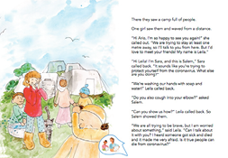
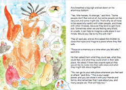

KEY MESSAGE 6 All people need to be protected
CHAT 6
Let’s CHAT
Ario took Sara and Salem far away. COVID-19 has no boundaries. It has travelled the world infecting people wherever it goes. From one end of the world to the other, crossing boundaries between countries and infecting people who live at home or in camps. It finds people who are rich or poor with all colors, ages and religions. If we look closely at the picture, we can see that Ario landed in a camp where many people are living closely together.
Leila asked a question that I’d rather not answer. She asked, “Is it true people can die from coronavirus?” I would prefer that your life does not include any heartache ever. Let’s read how Ario answers Leila’s question...
> Read these pages of My Hero is You

